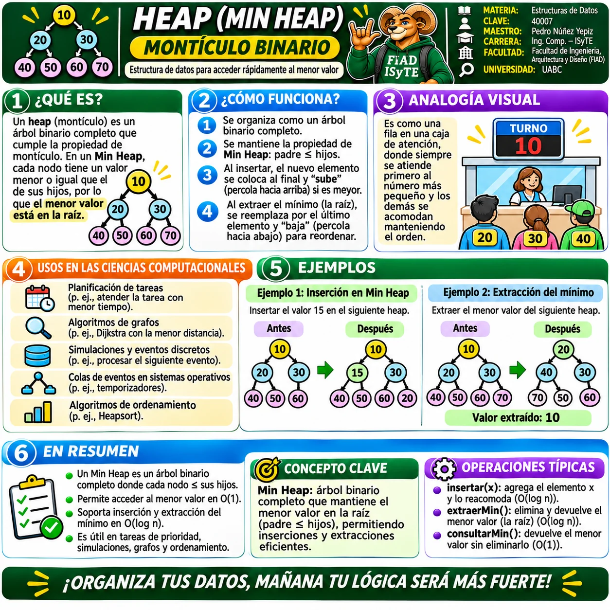
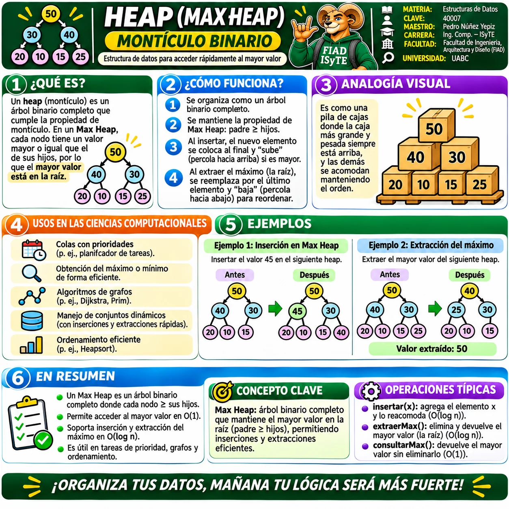
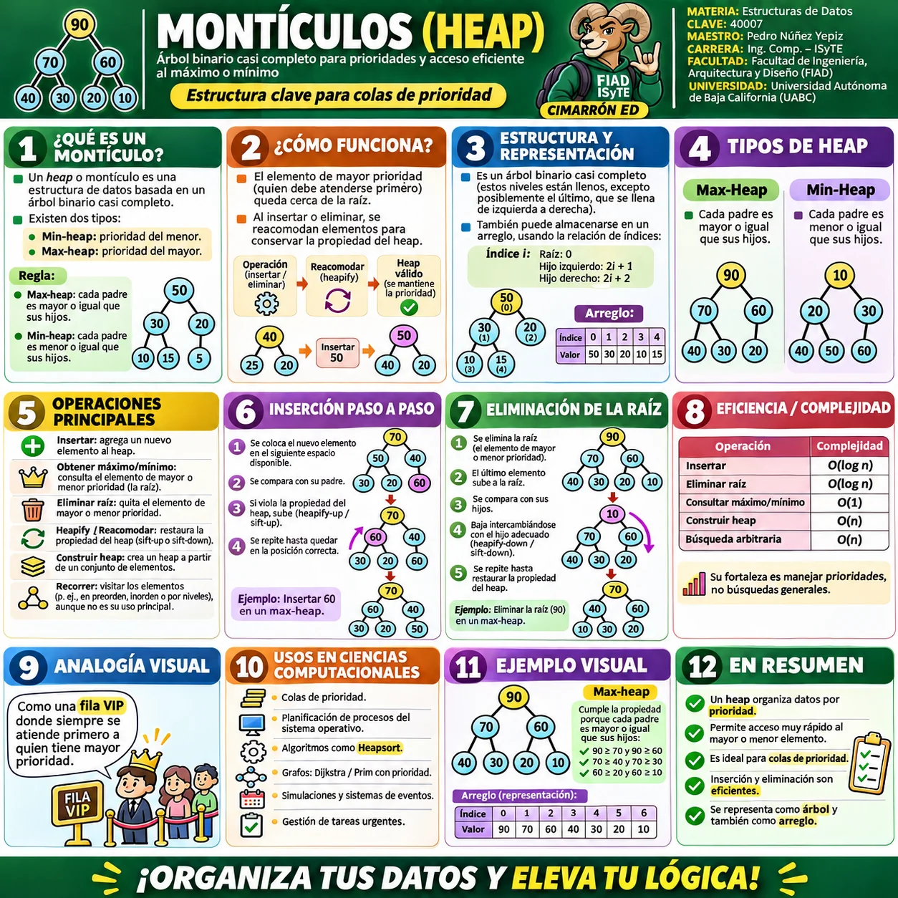
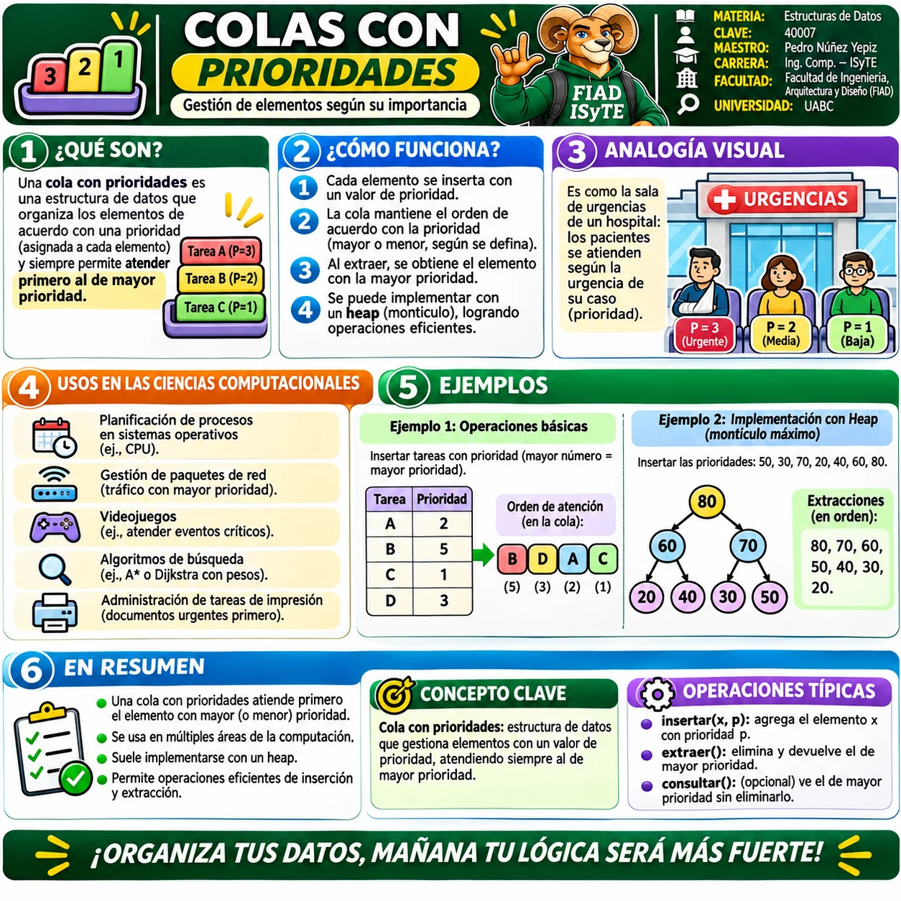

⚡ Galería visual de Prioridad y Montones
Selecciona una infografía para verla a pantalla completa. Puedes usar Zoom +/−, anterior/siguiente y Esc para cerrar.

1 · Min-Heap · Montículo mínimo
Qué es un Min-Heap, cómo funciona, analogía visual, usos, inserción, extracción y operaciones típicas.

2 · Max-Heap · Montículo máximo
Qué es un Max-Heap, funcionamiento, analogía visual, aplicaciones, inserción, extracción y eficiencia.

3 · Montículos (Heap) · Panorama general
Concepto de heap, representación en arreglo, Min-Heap, Max-Heap, operaciones, complejidad y aplicaciones.

4 · Colas con prioridades
Concepto, funcionamiento, analogía visual, usos en ciencias computacionales y relación con los montículos.
💡
RECOMENDACIÓN
Comienza con la infografía general de Montículos, continúa con Min-Heap y Max-Heap, y termina relacionando estas estructuras con las colas con prioridad.
Comienza con la infografía general de Montículos, continúa con Min-Heap y Max-Heap, y termina relacionando estas estructuras con las colas con prioridad.